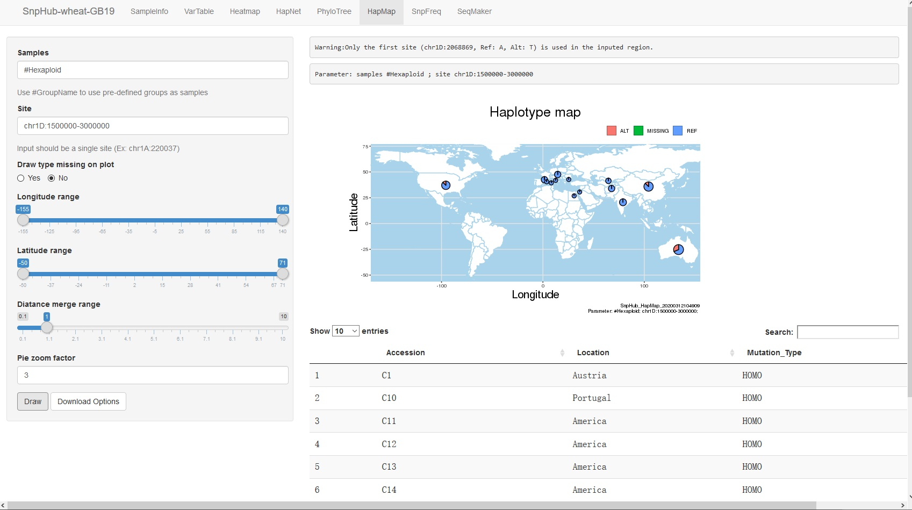
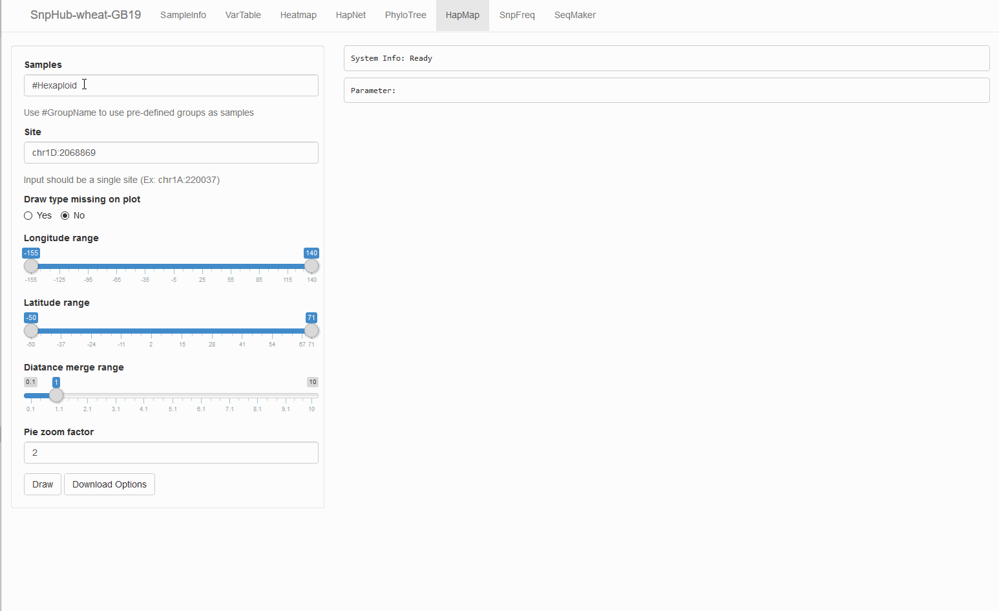

2.7. HapMap
The HapMap function provides a way to project the allele distribution of a single site geographically on a map, utilizing the provided resource-gathering locations.

2.7.1. Panel ① on the left provides severial options:
Samples: sample names are wanted here. Three ways are avaliable to input:
- Pure sample name list. Sample names are divided by ,, like
sample1,sample2,sample3. - Pure group list. Use a # before group name to transfer group into sample name list, like
#pre-defined-group-name-1,#pre-defined-group-name-2. - Mixed list. Something looks like
sample1,sample2,sample3,#pre-defined-group-name-1.
- Pure sample name list. Sample names are divided by ,, like
Site: a SINGLE site is wanted here.
- Input format should be
chr:pos, likechr1A:123. - If a genomic region is provided, the first variant site in this region will be used for the analysis.
- Input format should be
Longitude range: decide the maximun and minimum of the longitude to draw on the plot. A way to cut plot.
Latitude range: decide the maximun and minimum of the latitude to draw on the plot. Another way to cut plot.
Diatance merge range: coefficient of the merge range. Larger the coefficient is, bigger the merge range is. And merge range means the pies on he plot may be merged into one, because they are too close (in the merge range).
Draw: click when getting all options ready.
2.7.2. Download Options

Click the Download Options button, and then you can select format, width and height of the plot shown as the result. Then, click Download to download it.
2.7.3. GIF Demonstration
